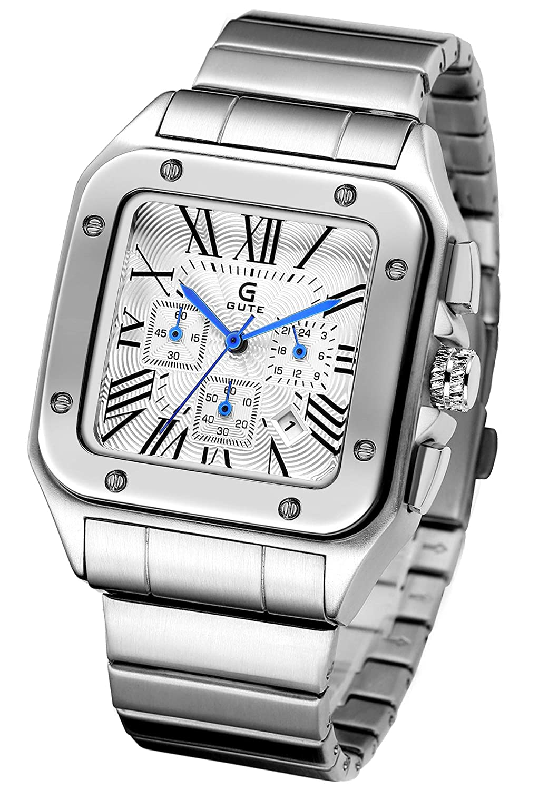
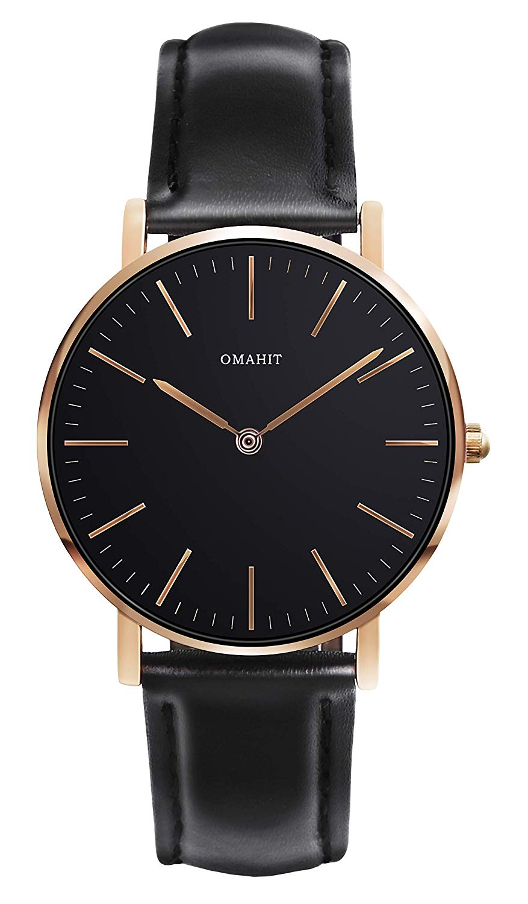
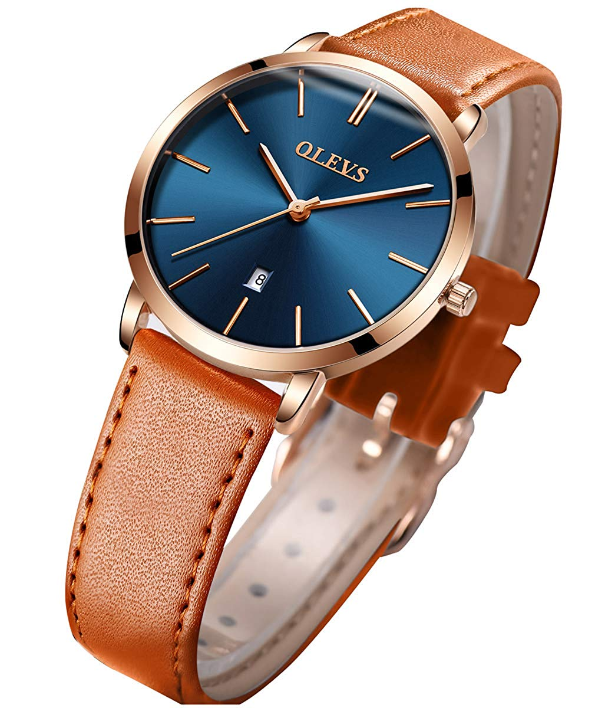
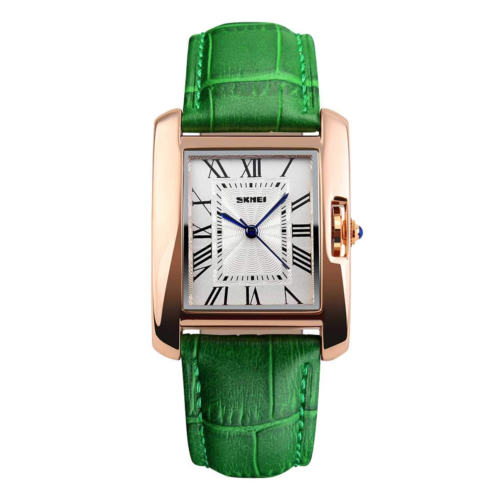

Q1.時計を見るのは楽しい
Q2.友人が病気で休んだら忙しくてもお見舞いする
Q3.結局のところ時計はファッションだ
Q4.時計はシンプルなものが良い
Q5.時計をつけるなら軽い物より重たくがっしりした物がいい

基本時計全体がメタルなのと、文字盤の数字がローマ字かつクラシックなのを考慮すれば、ビジネスの場に特化した時計と言えます。この時計も例にもれず、文字盤の紋様はユニーク性がありながらも堅実なクラシックかつスクエア型で、ケースやバンドも含めてメタルなので、ビジネスの場においてとてもクールな印象を感じとれます。この時計の売りとしては一番はデザインなのでしょうが、実は機能面も充実しています。具体的には、ストップウォッチ機能があったり、カレンダー機能、秒速メーターなどです。この時計は説明にある通り全体でとらえると、本格的にビジネスに向いたクールさがあるので、あなたがこの時計を持つにふさわしい環境にあるのならとてもおすすめできます。

100人中95人の女性が選ぶとされるモデルの時計です。「付けると華奢に見える、時刻が読みやすい、大き過ぎない。」とよく言われていて、この時計のシンプルかつ配色が落ち着いた黒故に、どんなファッションにも似合うことから女性に人気な理由なのでしょう。この時計は見た目だけで小さくて軽いとわかりますが、その重量は500円玉4枚の重さと同等なので、見た目以上の軽さをしている所は魅力ポイントです。よって、あなたが小さく、身に着けやすさ、そして軽さに主眼を置いているのなら、まさに働くすべての女性のために作られたこの時計はおすすめです。

ザッファッションビジネス時計です。あらゆる場面で活躍できます。日常生活の友にもなりますし、ビジネス時の相棒ともなります。色の配色が珍しく、青、金、茶色とそれぞれ部位ごとにはっきり分かれ、ユーモアの雰囲気をあなたに持たしてくれます。この時計と同じモデルで他にも色違いが７つあり、自分好みの配色の時計を選ぶ楽しさを味わえ、どんな配色を選んでもハズレのない物ばかりなのでおすすめです。

エレガントでシック、ゴージャスなスクエアタイプのレディース腕時計。強い女社長のにおいがプンプンする時計ですね。この時計が強いオーラ感を出すのは、風防は厚手のハードガラスを採用しているので強度は強く、30メートルの耐水性、クロコダイル型の押しベルトなどの強い個性を持っているためだと考えられます。購入するとき選べるベルトの色には、ローズゴールドカラーにレッド、ブラウンやブラックなどの落ち着いた色も選べるようになっています。あなたが女社長、社長じゃなくても強い個性に憧れるならおすすめできる時計です。1万円以内、コスパですね・・・・